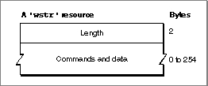

Legacy Document
Important: The information in this document is obsolete and should not be used for new development.
Important: The information in this document is obsolete and should not be used for new development.


The Query String Resource
A query document must contain one or more query string resources of type'wstr'. These'wstr'resources contain individual queries--that is, strings of commands and data that theDBSendfunction sends to the data server and that theDBExecfunction executes.A
'wstr'resource consists of a 2-byte length field followed by a character string. (The w in'wstr'refers to the length word as opposed to the length byte used in an'STR 'resource.) Each'wstr'resource contains one query (or one query template, to be modified by the query definition function before it is sent to the data server). Figure 12-10 shows the structure of the'wstr'resource.Figure 12-10 Structure of a compiled query string (
'wstr') resource
The
'qrsc'resource includes an array that lists the resource ID numbers of all of the'wstr'resources in the query document and an index into the array that specifies which one of the'wstr'resources should be sent to the data server.